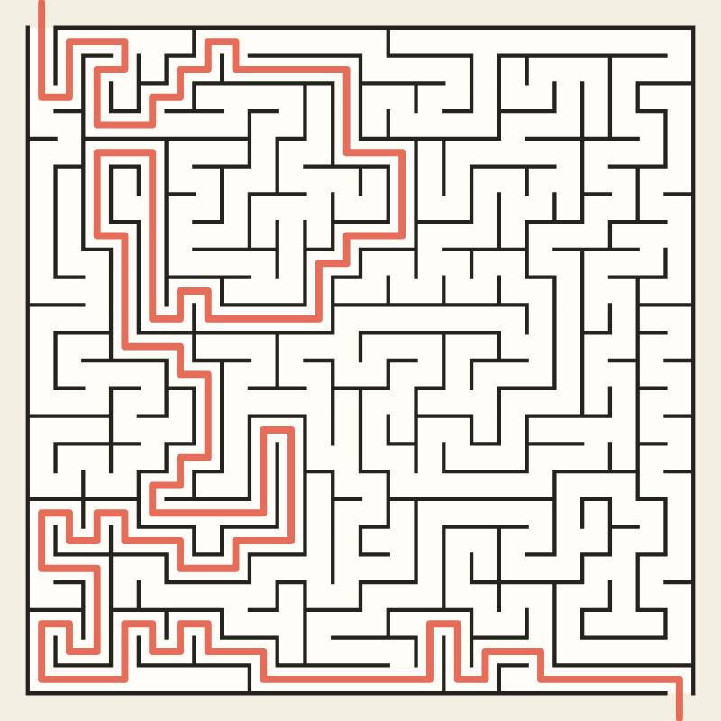

What a maze is, how a computer makes one, and how to find your way through.

What is a maze?
A maze is a puzzle made of passages: it branches, it has dead ends, and the challenge is to find the way through.
That is what sets it apart from a labyrinth. A labyrinth has a single path with no choices, and walking it always takes you to the center (see Labyrinth Maker). A maze asks you to decide at every fork, and lets you get lost. The two words are often used for each other, and the labyrinth of the Minotaur in the Greek myth, which nobody could find their way out of, sounds a lot more like a maze.
A maze is made of a few parts:
Cells
The squares of the grid, or the pieces of the rings in a circular maze. Each one is a small room with up to four walls (sometimes more on a circle).
Passages
The walls that were taken down between neighboring cells.
Dead ends
Cells with a single way in. The more there are, the more places to go wrong.
Solution
The way from the entrance to the exit, or to the center.
Perfect maze
A maze with exactly one path between any two cells: no loops, and no part cut off from the rest.
How a computer makes a maze
Start from a grid with every wall standing. Take walls down, one at a time, until every cell can be reached, but never take down a wall between two cells that are already connected, or you would make a loop. When you are done, the passages form what mathematicians call a spanning tree of the grid, and the maze is perfect. What changes from one algorithm to the next is the order in which the walls come down, and each order leaves its mark on the maze:
Backtracker
A depth-first search: from the current cell, move to a random unvisited neighbor, taking the wall down, and back up only when there is nowhere left to go. It makes long winding corridors, few dead ends, and a long solution.
Prim
Adapted from Robert Prim's 1957 algorithm for minimum spanning trees. The maze grows from one cell, adding at each step a random cell from its edge. Many short dead ends, and a fairly direct solution.
Kruskal
Adapted from Joseph Kruskal's 1956 algorithm. Take walls in random order, anywhere on the grid, and remove each one that separates two regions not yet joined. An even texture, all over.
Wilson
David Wilson's 1996 algorithm, built on random walks that erase their own loops. It is slower, but every possible maze on the grid is equally likely to come out, so it has no bias at all.
Hunt & Kill
A random walk like the Backtracker's, but when it gets stuck it doesn't back up: it scans the grid for an unvisited cell next to the maze, joins it, and walks on from there. Long corridors, with a slightly more even texture.
Growing Tree
Keeps a list of cells to grow from. Always taking the newest one makes it the Backtracker, always taking a random one makes it close to Prim; Maze Maker picks the newest half of the time, for a maze in between.
Aldous-Broder
Found independently by David Aldous and Andrei Broder around 1989. A pure random walk that knocks down a wall each time it steps into a cell it has never visited. It is the simplest of all, and like Wilson it gives every possible maze the same chance, but it can wander a long time before it finds the last few cells.
The Loops setting of Maze Maker then opens some of the dead ends into a neighbor. The maze stops being perfect: there is now more than one way through, and some simple tricks for solving it stop working.
How to solve a maze
Put one hand on a wall and keep it there.
In a perfect maze, following one wall, always turning the same way, will take you from the entrance to the exit, because all the walls are connected to the outside. It won't take the shortest way, and it fails in a maze with loops when the goal sits on an island of walls that doesn't touch the outside, like the center of a circular maze. In the 19th century, the French engineer Charles Pierre Trémaux described a method that works in any maze: mark each passage as you walk it, and never take a passage marked twice. Computers do it more simply: a breadth-first search explores every cell one step away from the entrance, then two steps, then three, until it reaches the exit, and finds the shortest way. That is how Maze Maker draws its solution, and how it colors the cells by distance.
A short history of mazes
RenaissanceHedge mazes become a feature of European palace gardens, puzzles to wander in rather than paths to walk.
1690sThe hedge maze at Hampton Court Palace, near London, is planted for William III. It is the oldest surviving hedge maze in Britain and still open to visitors.
19th centuryCharles Pierre Trémaux describes a method for solving any maze by marking the passages as you go, an early form of depth-first search.
1950Claude Shannon builds Theseus, a mechanical mouse that learns its way through a maze of movable walls, one of the first machines that learn.
1970s onwardMazes move to screens, in early computer games and in programs that generate a new maze every time.
1993The first large corn maze opens in Pennsylvania. Every autumn since, farmers cut new mazes into their fields.
About this drawing
Maze Maker draws mazes in four shapes. Square mazes are entered at the top left and left at the bottom right. Circular ones, sometimes called theta mazes, are entered from the outside, with the goal at the center; the rings farther out are longer, so a ring splits its cells in two whenever they would get much wider than they are deep. Triangular mazes cut a big triangle into small ones, each with three neighbors at most, which gives them their zigzag look. Heart-shaped mazes are square grids with every cell outside the heart left out. The algorithms don't care about the shape: to them, a maze is just cells and which cells are next to each other. Every maze comes from a number, its seed: the same settings and seed always give the same maze.